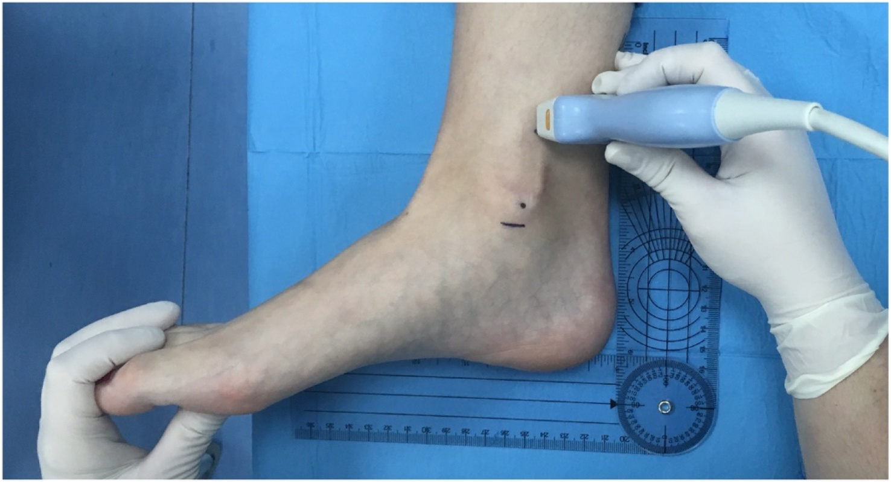
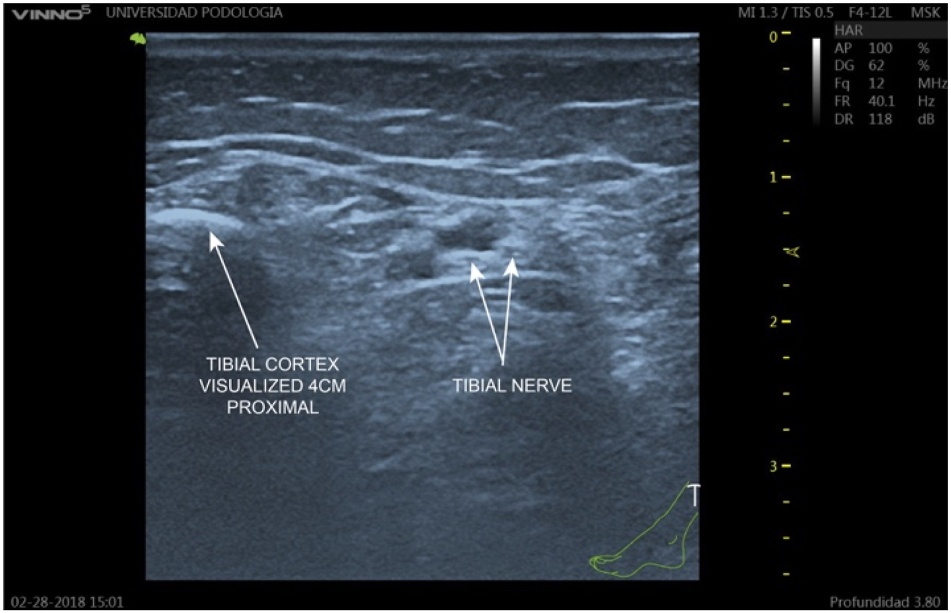

Respuesta clínica corta
¿Dónde buscar el nervio tibial antes de que entre en el túnel tarsiano?
En un corte transversal 4 cm proximal al maléolo medial, junto a la arteria tibial posterior y usando la cortical tibial como referencia fija.
Dato claven=100 · distancia media 1,81 cm · profundidad media 1,24 cm
A 4 cm del borde inferior del maléolo medial, el nervio tibial pudo localizarse con referencias óseas y vasculares reproducibles; los valores describen anatomía sana y no deben convertirse en umbrales diagnósticos ni en coordenadas fijas para intervenir.
Observado
Qué encontró y cómo interpretarlo
El nervio se situó a una distancia media de 1,81 cm de la referencia cortical medial y a 1,24 cm de profundidad. Los rangos fueron amplios —0,88–2,83 cm y 0,60–2,59 cm—, por lo que la media orienta pero no sustituye localizar cada nervio.
La relación más frecuente fue nervio posterior a la arteria tibial posterior, presente en el 61%; un 29% se situó profundo, un 9% anterior y un 1% mostró bifurcación a ese nivel.
La calibración previa mostró fiabilidad excelente para distancia y profundidad, pero solo moderada para perímetro. Además, todas las mediciones finales las realizó un único ecografista, de modo que no se conoce la reproducibilidad cotidiana entre profesionales.
Peso, índice de masa corporal y perímetro maleolar se asociaron con la posición mediolateral, y el índice de masa corporal con la profundidad. Esto refuerza la necesidad de escanear, no de aplicar coordenadas universales.
Atlas del artículo
Imágenes para entender el procedimiento
Estas figuras proceden del artículo original y se reproducen con licencia abierta verificada. Se muestran por su utilidad anatómica o técnica, no como prueba aislada de diagnóstico o eficacia.

El nivel de adquisición se fija 4 cm proximal al borde inferior del maléolo medial, con el tobillo mantenido en posición neutra.
Cómo leerlaLa fotografía muestra dónde adquirir la imagen; no representa por sí sola una zona segura para punción ni contempla todas las variantes anatómicas.
Benimeli-Fenollar M et al., figura 1 del artículo original · Fuente · Licencia CC BY.

El nervio tibial aparece como una estructura predominantemente hiperecogénica con fascículos hipoecogénicos junto a la arteria tibial posterior.
Cómo leerlaEs un ejemplo anatómico sano y seleccionado; ecogenicidad, profundidad y relación vascular pueden variar y no diagnostican neuropatía de forma aislada.
Benimeli-Fenollar M et al., figura 2 del artículo original · Fuente · Licencia CC BY.
Procedimiento del artículo
Localización supramaleolar del nervio tibial paso a paso
El protocolo estandariza un corte transversal del paquete neurovascular medial del tobillo. Combina una referencia ósea palpable, Doppler para reconocer la arteria y movimiento del primer dedo para diferenciar el nervio del tendón flexor largo del hallux.
- Posición
- Decúbito supino, tobillo neutro y pie a 90° respecto a la tibia
- Nivel
- Línea transversal 4 cm proximal al borde inferior del maléolo medial
- Transductor
- Lineal de alta frecuencia, 4–12 MHz, orientado transversalmente
- Mediciones
- Distancia a la cortical tibial, profundidad, perímetro y relación con la arteria
- 01
Marcar la referencia ósea
Se palpa el borde medial de la tibia y se marca un nivel situado 4 cm por encima del borde inferior del maléolo medial.
- Referencias
- Maléolo medial, borde medial de la cortical tibial y cara medial de la pierna distal.
- Lectura
- La marca fija el mismo nivel anatómico entre personas y evita desplazar la medición hacia el túnel tarsiano.
- 02
Identificar el paquete neurovascular
Se coloca el transductor transversalmente y se busca una estructura fascicular hiperecogénica próxima a la arteria tibial posterior; se añade Doppler si existe duda vascular.
- Referencias
- Nervio tibial, arteria tibial posterior, tendón tibial posterior y tendón flexor largo de los dedos.
- Lectura
- La arteria es la referencia móvil y vascular; el nervio debe mostrar patrón fascicular y no señal de flujo.
- 03
Descartar una falsa identificación
Si el flexor largo del hallux puede confundirse con el nervio, se solicita flexión plantar del primer dedo mientras se observa la estructura en tiempo real.
- Referencias
- Tendón flexor largo del hallux en un plano profundo y nervio tibial junto a la arteria.
- Lectura
- El movimiento del tendón permite separarlo del nervio; después se realizan tres mediciones y se utiliza su media.
Procedimiento reconstruido a partir del protocolo de ecografía y de las definiciones de medición del texto completo. Su finalidad es explicar cómo se obtuvieron los datos del estudio, no enseñar una intervención invasiva.
Aplicabilidad
Qué significa clínicamente
La línea a 4 cm del maléolo medial ofrece un punto de inicio sencillo para estudiar el nervio tibial antes de su trayecto distal.
Doppler y movimiento activo del primer dedo son comprobaciones útiles cuando existe riesgo de confundir vaso, nervio y tendón.
Los cuatro patrones neurovasculares pueden utilizarse como lista mental para no asumir que el nervio siempre queda posterior a la arteria.
La referencia puede apoyar planificación ecográfica, pero cualquier procedimiento invasivo requiere formación específica, visualización continua y evaluación individual de riesgos.
Límite
Qué no permite afirmar
El estudio describe personas sanas y no evaluó pacientes con neuropatía, dolor, cirugía previa o alteraciones anatómicas.
No comparó la ecografía con disección, resonancia, cirugía ni pruebas neurofisiológicas como patrón de referencia.
La muestra procedía de una comunidad universitaria, tenía una edad media de 29 años y puede infrarrepresentar personas mayores o con mayor complejidad clínica.
No se evaluaron precisión diagnóstica, seguridad de procedimientos, curva de aprendizaje ni resultados clínicos.
Contexto
¿Se parece a tu paciente?
- Población estudiada
- 100 personas adultas sanas, 57 mujeres y 43 hombres, de 19 a 74 años, sin neuropatía, traumatismo o cirugía previa de tobillo ni enfermedad sistémica que afectase a los nervios periféricos.
- Diseño
- Estudio anatómico ecográfico transversal en personas sanas
- Resultado evaluado
- Posición ecográfica del nervio tibial respecto a la cortical tibial y la arteria tibial posterior
Fuente primaria
Lee el estudio, no solo nuestro análisis
Benimeli-Fenollar M, Macián-Romero C, Carbonell-José L, et al. In Vivo Ultrasound Characterization of the Tibial Nerve at the Supramalleolar Region. J Foot Ankle Res. 2026;19(3):e70178. doi: 10.1002/jfa2.70178
Responsabilidad editorial
Francisco José Extremera García
Fisioterapeuta colegiado ICPFA 4288 · Osteópata D.O.
Creador y responsable editorial de FisioLógico
- Última revisión
- Conflictos de interés
- Ninguno declarado.